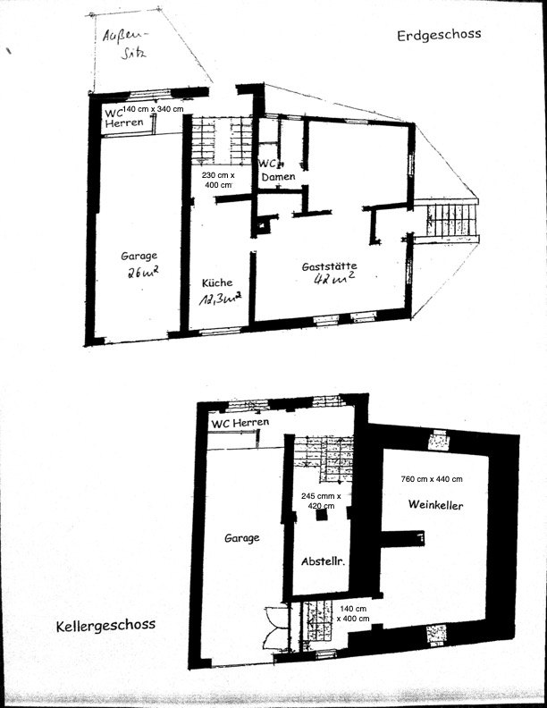
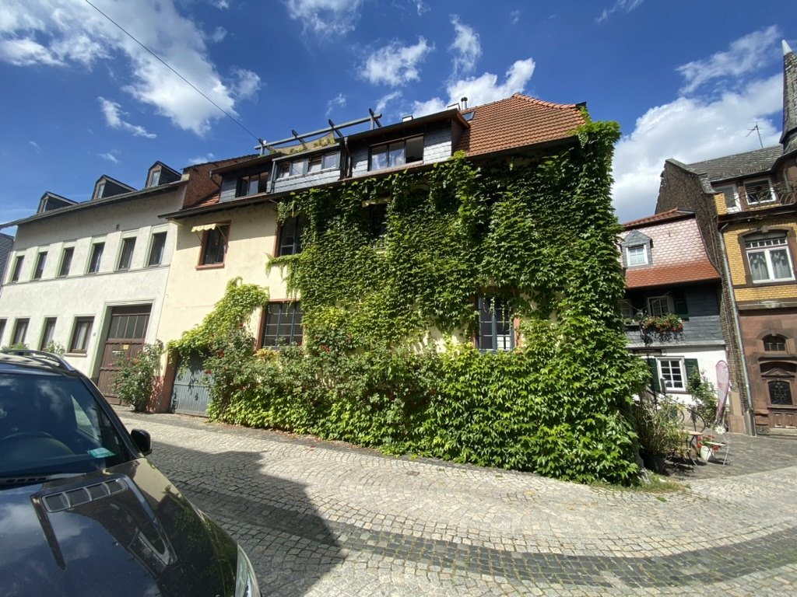

Manche Immobilien bieten Räume. Das Treppchen bietet Möglichkeiten.
Seit rund 50 Jahren ist „Das Treppchen“ unter diesem Namen im Rheingau bekannt. Das historische Fachwerkhaus in Walluf stammt ursprünglich aus dem 18. Jahrhundert und verbindet Altstadtflair, Rheingau-Atmosphäre und die Nähe zum Rhein auf eine Weise, die sich nicht neu bauen lässt.
Die begrünte Fassade, die Treppe zum Eingang und die Lage im alten Ortskern machen das Objekt zu einem Ort mit eigener Ausstrahlung. Hier entsteht kein neues Konzept auf der grünen Wiese. Hier wird Geschichte weitergeschrieben.
Das Objekt
Im Erdgeschoss stehen ein Gastraum, eine vorhandene Küche sowie WC-Anlagen zur Verfügung. Im Untergeschoss befinden sich Nebenflächen
Die Küchenausstattung wird mitvermietet. Das Objekt ist brauereifrei. Außengastronomie ist grundsätzlich möglich und muss mit dem Bürgermeisteramt abgestimmt werden.
Die Garage darf wegen der gastronomischen Nutzung nicht als Garage verwendet werden; sie eignet sich als Lager- oder Nebenfläche.
Auf einen Blick
65396 Walluf
Ideal für neue Ideen
Das Treppchen eignet sich für Konzepte mit Charakter – klassisch gastronomisch oder als besondere Gewerbefläche.
{kind=link}
{kind=link}
{kind=link}
{kind=link}
{kind=link}
{kind=link}
{kind=link}
Grundriss & Flächen
Die Grundrisse zeigen die Aufteilung von Erdgeschoss und Kellergeschoss. Die vorhandenen Flächen ermöglichen unterschiedliche Nutzungskonzepte – von Gastronomie über Wein-/Feinkost bis zu kreativen Gewerbeideen.
- Gastraum im Erdgeschoss
- Küche mit mitvermieteter Ausstattung
- Damen- und Herren-WC
- Lager- und Nebenflächen

Lage am Rhein
Walluf gilt als Tor zum Rheingau. Das Treppchen liegt im historischen Ortskern, nur ca. 80 Meter vom Rheinufer entfernt und mit etwas Blick auf das Wasser.
Die Umgebung verbindet Weinbau, Tourismus, Naherholung und regionale Gastronomie. Ein öffentlicher Parkplatz befindet sich ca. 50 Meter entfernt.

Energie & Gebäudedaten
Energieausweis gültig bis 31.03.2035.
Energieausweis als PDF öffnenVielleicht ist Ihre Idee genau das, worauf dieser Ort gewartet hat.
Bitte senden Sie Ihre Anfrage ausschließlich per E-Mail. Besichtigungen erfolgen nach Vereinbarung.